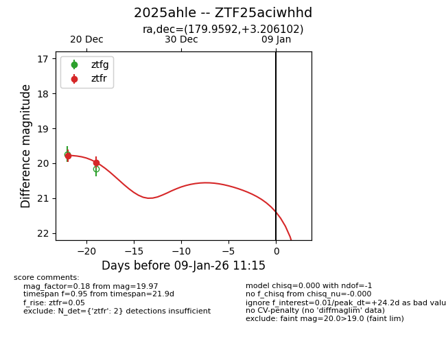
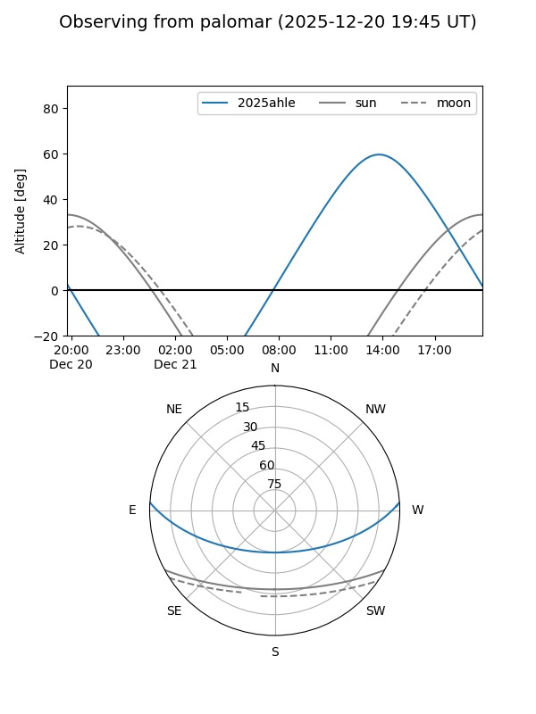
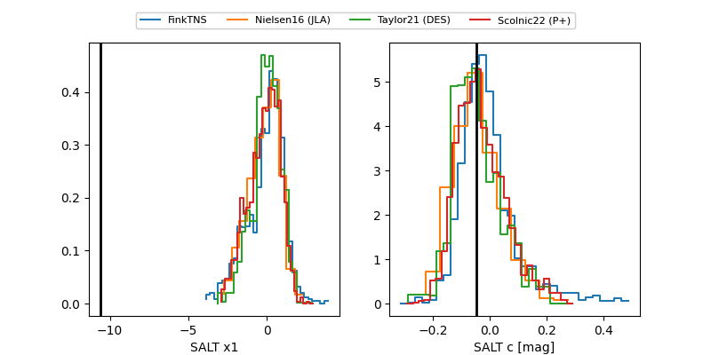

2025ahle
Target 2025ahle at 2025-12-20 15:09
Aliases and brokers:
FINK: fink-portal.org/ZTF25aciwhhd
Lasair: lasair-ztf.lsst.ac.uk/objects/ZTF25aciwhhd
ALeRCE: alerce.online/object/ZTF25aciwhhd
TNS: wis-tns.org/object/2025ahle
YSE: ziggy.ucolick.org/yse/transient_detail/2025ahle
alt names
ZTF25aciwhhd (ztf,fink_ztf)
2025ahle (tns,yse)
Coordinates:
equatorial (ra, dec) = 179.9592,+3.20610
equatorial (HMS+DMS) = 11:59:50.20,+03:12:21.97
galactic (l, b) = (273.4331,+63.08374)
Flags:
Photometry:
last ztfr=19.78
1 ztfr detections
Lightcurve

Visibility


Additional plots
